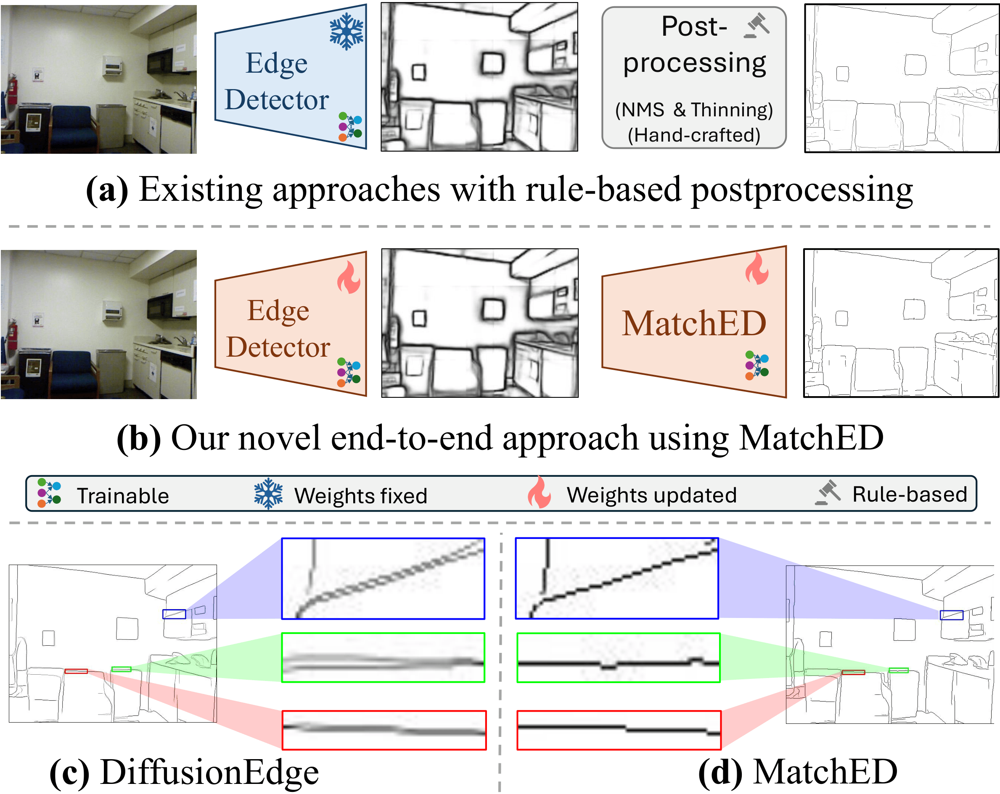
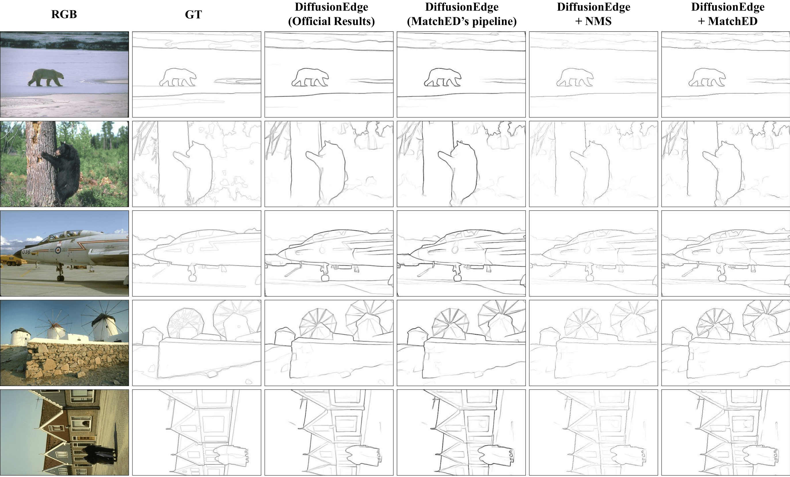
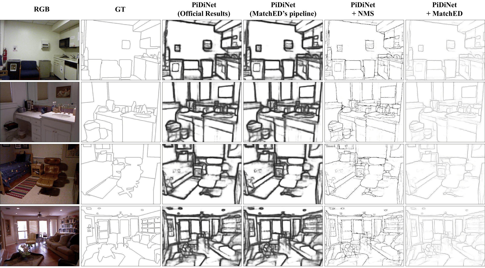

Our proposed framework, MatchED, is a lightweight, plug-and-play supervision module that adds only ~21K parameters. It can be seamlessly appended to any edge detection model, enabling joint, end-to-end learning of crisp edges.
MatchED significantly outperforms state-of-the-art crisp edge detection methods in terms of the Average Crispness (AC) metric on three benchmarks: BSDS, Multi-Cue, and BIPED.
| Method | BSDS | Multi-Cue | BIPED |
|---|---|---|---|
| PiDiNet + Dice Loss | .306 | .208 | .340 |
| PiDiNet + Tracing Loss | .333 | .217 | .296 |
| PiDiNet + Label Refinement | .424 | .424 | .512 |
| DiffusionEdge | .476 | .462 | .849 |
| PiDiNet + MatchED | .930 | .810 | .941 |
MatchED delivers a substantial improvement in edge crispness across diverse architectures and datasets. When integrated as a plug-and-play module into models like DiffusionEdge or PiDiNet, it consistently produces sharper edges without using traditional post-processing.


This work was supported by the Council of Higher Education Research Universities Support program through METU Scientific Research Projects (``New Techniques in Visual Recognition’’, Project No. ADEP-312-2024-11485). We also gratefully acknowledge the computational resources provided by METU-ROMER, Center for Robotics and Artificial Intelligence, as well as TUBITAK ULAKBIM Truba.
@article{cetinkaya2026matched,
author = {Bedrettin Cetinkaya and Sinan Kalkan and Emre Akbas},
title = {MatchED: Crisp Edge Detection Using End-to-End, Matching-based Supervision},
year={2026},
booktitle={IEEE/CVF Conference on Computer Vision and Pattern Recognition},
url={https://cvpr26-matched.github.io/}
}